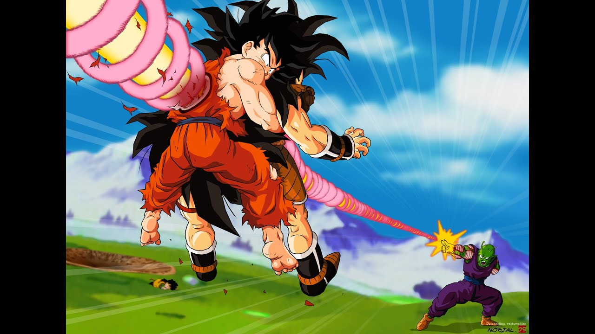
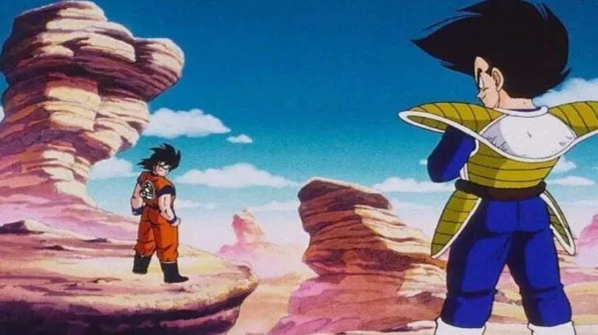
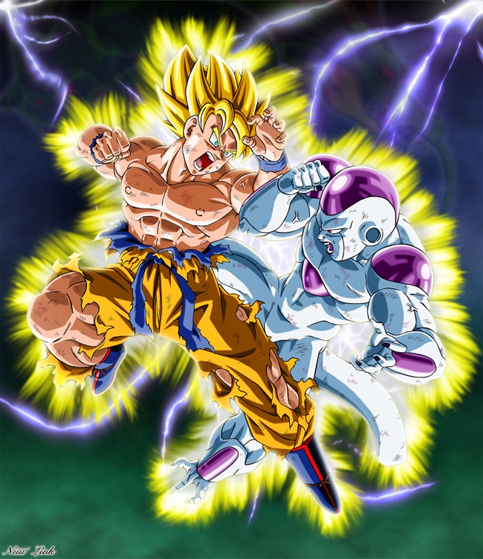
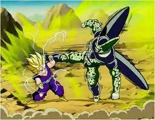
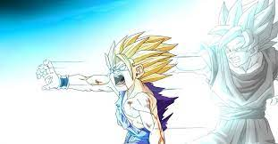
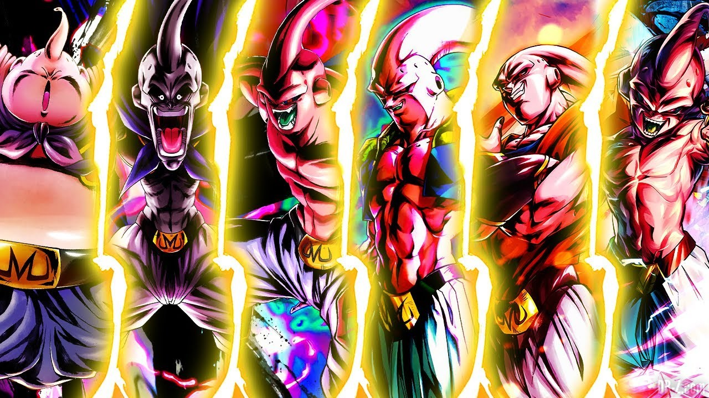

Histoire de Dragon Ball Z
Saga Saiyens
L’histoire de Dragon Ball Z débute 5 ans après que Son Goku est battu Satan petit Coeur et qu’il se soit marié avec Chichi, ils ont eu un fils nommé Son Gohan qui sera un personnages important dans l’arc des cyborgs et du fameux Cell Game. Son Goku veux présenter son fils à Tortue Génial, un vielle ami. Mais un grand Guerrier ressemblant à Son Goku qui se nomme Raditz lui apprend qu’il est le frère de Son Goku et qu’il viens d’une planète de combattants désormais éteinte, la planète des Saiyens. Ce dernier enlève le fils de Son Goku afin de le convaincre de le suivre et de devenir un « vrai » Saiyens, il menace de tuer Son Gohan. Cette situation amène un combat qui se termine par le sacrifice de Son Goku ainsi qu’une révélation importante que fait Raditz : 2 Saiyens arriveront sur la Terre dans 1 ans jour jour pour jour afin de s’emparer des 7 boules de cristal, objets magiques qui, une fois réunis, permets de réaliser n’importe quel vœu. Pendant ce temps dans le monde des morts de Kaio, Son Goku s’entraine pour devenir plus fort.
Raditz n’avais pas menti, 1 ans après le combat, 2 saiyens arrivent sur la Terre. Ils se nomment Nappa et Vegeta, un combat commence, entrainant la mort de Yamcha et Ten shin han, les amis Terrien de San Goku. Vegeta les entend parler d’un grand guerrier nommé Son Goku et par fierté donne 3 heures aux protagonistes pour attendre celui-ci. Son Goku n’arrivera pas a temps et cela entrainera la mort de Satan petit cœur. Son Goku finit par arrivé du monde des mort au moment critique et tue le guerrier Nappa. Apres un combat effréné entre Vegeta et Son goku ceux-ci finissent par se côtoyer pour pouvoir affronté des ennemis communs.
Saga Freezer
Quelque temps après, Son Gohan, Bulma et Krilin partent pour Namek, planète d’origine de Satan Petit coeur et du Tout Puissant, afin trouver les boules de cristal et ressusciter les amis morts contre les 2 saiyens. Nos protagoniste tombent sur un Tyran nommé Freezer qui recherche également les boules de cristal pour devenir immortel. Un combats très important pour l’histoire débute, Son Goku fou de rage obtient sa première transformation, celle de Super Saiyen qui lui apporte une puissance incroyable ainsi qu’une chevelure dorée et des yeux verts, guerrier légendaire chez les Saiyens. Son Goku gagne le combat mais ne sais pas que Freezer a survécu. Le père de celui-ci le récupère, le soigne et se dirige sur Terre pour se venger, la situation est critique mais un mystérieux guerrier nommé Trunks débarque et élimine avec une facilité déconcertante Freezer et son père. On apprend par la suite qu’il viens du futur et qu’il est le fils de Vegeta et Bulma. Trunks sauve Son Goku d’une maladie du cœur dont il est censé mourir dans le futur.
Saga Cell
Trunks annonce a ses amis l’arrivées des cyborg sur Terre, qui veulent détruire toute vie humaine, C-19, C-18 et C-17. Vegeta élimine C-19 facilement car il a entre temps lui aussi atteint le stade de Super Saiyen. C-18 et C-17 tuent leur créateur car il a le pouvoir de les désactiver et réveillent un autre cyborg dans le laboratoire de celui-ci, C-16. Pendant que les cyborgs sont à la poursuite de Son Goku, Trunks découvre une machine à voyager dans le temps ainsi qu’une étrange mue de bête. Cette bête se montre en ville et absorbent des humains pour accroitre son énergie, n’étant pas assez puissante pour vaincre les guerriers terriens, celle-ci s’enfuit. Pour se préparer à son retour Trunks et Vegeta vont s’entrainer dans la salle du temps, 1 ans dans cet endroit correspond a 1 jour sur Terre. A son retour on découvre que la bête se nomme Cell, il absorbe C-17 et devient beaucoup plus fort. Vegeta combat à son tour Cell, trouve que c’est trop facile car dans la salle du temps il a attend le stade de super Vegeta et par fierté le laisse absorbé C-18, Cell obtient alors sa forme parfaite. Cell prend le dessus, laisse 9 jours aux saiyens pour s’entrainer et organise un grand tournoi final. Pendant ce tournoi Son Goku n’arrivent pas à battre Cell. C-16 qui était devenu ami avec Son Gohan entre temps se fait détruire par Cell avec une grande méchanceté, Son gohan deviens fou de rage et sa colère dévoilent son nouveau pouvoir, celui de Super Saiyen 2. Malgré tout les effort de Son goku et Son gohan, Cell survit ce qui donne place a une scène mythique du manga, un Kaméhaméha père-fils avec Son Gohan et Son goku qui tue Cell.
Saga Boo
7 ans après le combat contre Cell, Son Goku revient sur Terre pour participer au 25ème tournoi d’arts martiaux. Cet événement entraine la naissance de Boo Boo, un terrible monstre ainsi que l’arrivé de Babidi et Dabra , prince du mal qui grâce a un sort rend Vegeta mauvais, celui-ci se bat donc avec Son Goku mais son esprit parvient a prendre le dessus sur le sort et il décide de se faire explosé pour emporter Boo avec lui et sauver ses amis, malheureusement Boo s’en sort sans aucune égratignure. Cet arc amène à une nouvelle transformation de Son Goku, il atteint le stade de Super Saiyen 3 mais également à la fusion de Trunks et Son Goten (le deuxième fils de Son Goku), qui donnent Gotrunks. Il échoue de justesse à tué Boo, après ce combat Boo rentre chez lui et se lie d’amitié avec le terrien Hercule. Un jour des gangsters tirent sur la maison de Boo ce qui provoque la séparation entre le bonne et mauvaise partie de Boo. Evidemment le méchant Boo est beaucoup plus fort que le gentil Boo, il transforme « le bon Boo » en chocolat et le mange. Gotrunks se fait absorber par Boo et celui-ci devient quasiment imbattable, cette situation force Son Goku et Vegeta à fusionner, ce qui donne Vegeto. Malgré tout et grâce a une énième transformations, Boo reste imbattable. Son Goku finit par tué Boo en exécutant le Genkidama, ce qui donnent une autre scène mythique du manga.

Après la mort de Boo, nos amis se retrouvent à un tournoi des arts martiaux. Son goku, Végéta, Son Goten, Trunk et Pan qui et la fille de Son gohan et de Videl et la petite fille à Son goku. Son goku fait part à Végéta qu'il sent qu' un puissant guerrier nommé Oub sera présent et que s'est réincarnation du petit Boo. Dragon ball z ce fini par le tournoi et par le combat entre Son goku et Oub. Son goku décide d'entrainer le jeune guerrier.